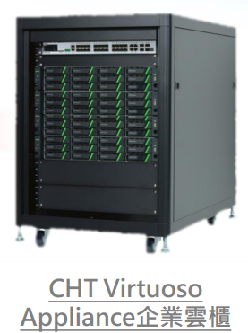

Libvirt (Ubuntu/Debian)
Ubuntu Debian
/etc/init.d/libvirt-bin /etc/init.d/libvirtd
Tomcat Java MVN
JDK vs JRE
Java SE Development Kit Java SE Runtime Environment
version 6 or 7
Cloud Management VS host management
CloudStack
OpenStack
oVirt
WebManager
Virtmanager
查詢 CPU 資訊
$ lscpu
查詢 block device (硬碟) 資訊
$ lsblk
檢視各種裝置 (預設未安裝)
$ lshw
$ sudo lshw -class network
Cloud Server stack
| CPU core(s) | Memory | HDD | NIC(s) | count |
| 8 | 20G | 500G, 500G, 500G, 500G, 4T(FC) | 1G*4 + fibre channel*1 | 1 |
| 16 | 32G | 500G, 500G, 1T | 1G*4 | 6 |
| 24 | 48G | 500G, 500G, 1T | 1G*4 | 2 |
| 6 | 16G | 1T, 1T | 1G*2 | 4 |
24 port gigabit switch *2
核心 : 記憶體 = 1 : 2G
中華電信+緯穎(Wiwynn)

| CPU core(s) | Memory | HDD | NIC(s) | Count |
| 16 | 96G | 12T NFS | 1G*2 + 10G*2 | 1 |
| 16 | 96G | 1T*2 LVM | 1G*2 + 10G*2 | 3 |
Switch: 1G*24 10G*4(8)
Cloud Server stack (Future)
| CPU core(s) | Memory | HDD | NIC(s) | count |
| 8 | 32G | 256G(SSD), 1T, 4T(FC) | 1G*4 + fibre channel*1 + 10G*1 | 1 |
| 16 | 64G | 256G(SSD), 1T | 1G*4 + 10G*1 | 6 |
| 24 | 96G | 256G(SSD), 1T | 1G*4 + 10G*1 | 2 |
| 6 | 24G | 256G(SSD), nT(ceph) | 1G*2 + 10G*1 | 4 |
24 port gigabit switch *2
16 port Xgigabit switch *1
number of HDD = (number of core) - 1
核心 : 記憶體 = 1 : 4G